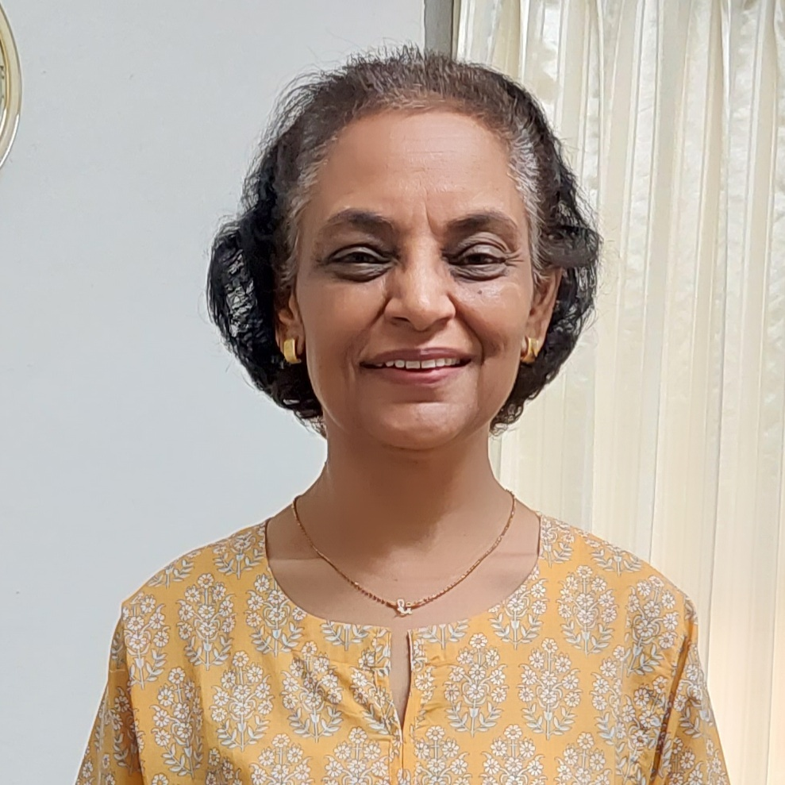

My journey has taken me through education, literature, research, and writing. My academic interests began with language and literature, leading to a Ph.D. in Persian Literature, and later expanded into education.
Living and working across different countries has also shaped the way I see the world. It has made me curious about how people think, how societies change, and how individual lives are influenced by the cultures and circumstances around them.
Research and writing have become a natural extension of that curiosity. I am drawn to questions that do not always have simple answers and to subjects that invite us to look beneath what we normally accept or take for granted.
This website brings together different parts of that journey—my research, writing, academic work, and the questions I continue to explore.
I write about people, experiences, and questions that stay with me. Some pieces begin with real events, some with things I have read or researched, and others simply with something that makes me stop and think.
Fiction and stories inspired by real lives, events, and experiences.
True and existing stories revisited and told in my own voice.
Personal and research-informed writing that explores people, experiences, ideas, and questions worth thinking about.
I’d be happy to hear from you. If you would like to get in touch about my writing, research, or a possible collaboration, send me a message below.